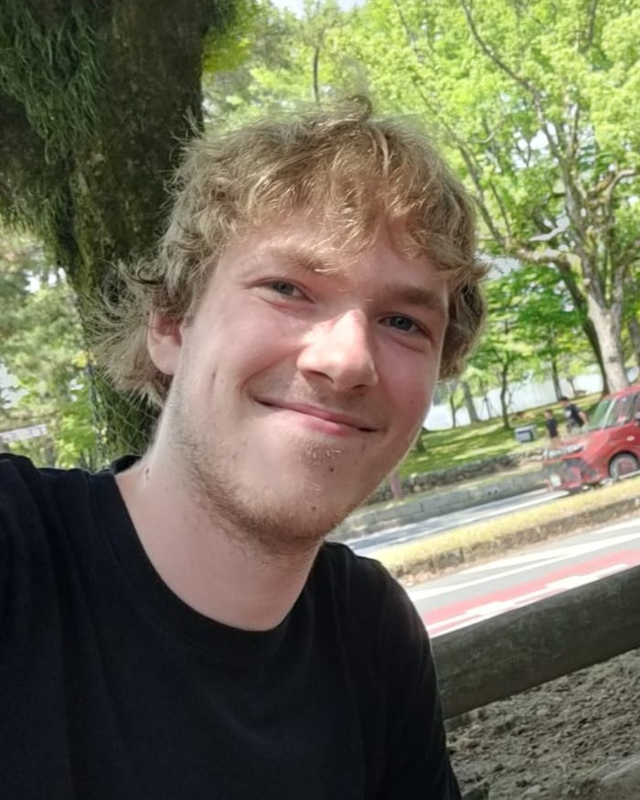

About me

As a child I always had an interest in board games and creating my own rules. Now I'm a student studying game design with a main focus on system design and prototyping.
When I took a programming class in high school a world opened for me. I finally had the tools I needed to take the ideas I had in my head and bring them out into the world. I started to recreate features and learned more about what it means to make games. This led to me deciding to study it at BUas and actually make the craft my own.
While at BUas, I've experimented with level design but felt myself getting drawn back to prototyping and creating new systems and mechanics. I want to continue expanding my skill set in this area by looking for an internship that allows me to create prototypes and bring ideas to life. If that sounds like a good fit for your team, I'd love to hear from you.
Toolkit
- Unreal Engine 5
- Blueprints
- Unity
- Miro
Focus areas
- Systems design
- Prototyping
- Level design
Education
BUas — Creative Media & Game Technologies
Based in
Breda, Netherlands
Timeline
-
2024 — Now
Education
Creative Media & Game Technologies
Breda University of Applied Sciences (BUas)
Studying game design, with a focus on systems design and prototyping in Unreal Engine.
If you want to contact me or see my socials, see the links below
Looking for an intern or have any other questions? I'd love to hear from you!